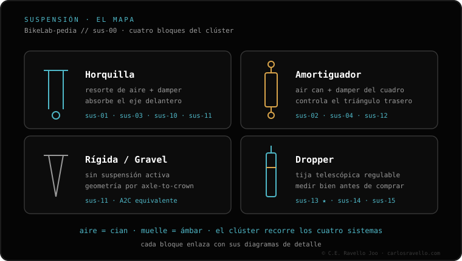

Inicio › BikeLab-pedia › Suspensión y tija
Clúster 07 · Suspensión y tija
Suspensión y tija
¿La suspensión va dura , se va al fondo o pierde aire ? ¿No sabes qué horquilla, amortiguador o dropper te entra? Aquí está el setup, las averías y la compatibilidad, resueltos sin vueltas.

Suspensión y tija SAG de la suspensión Empieza aquí. Cuánto se hunde con tu peso: 15-20% horquilla, 25-30% amortiguador. La base de todo el ajuste. Cinemática · cómo funciona por dentro
Cómo funciona la suspensión (explicada fácil) La guía pilar: leverage ratio, anti-squat, axle path y por qué hay tantos sistemas. De cero, sin marketing. Qué es el leverage ratio Cuánto se mueve la rueda por cada mm del amortiguador. El concepto madre. Qué es el anti-squat Por qué la bici "bombea" (o no) al pedalear fuerte. Qué es el anti-rise Por qué la trasera se "endurece" al frenar. Axle path (trayectoria del eje) El camino que traza la rueda al comprimir: hacia atrás traga mejor los golpes. Chain growth y pedal kickback Por qué un axle path trasero estira la cadena y patea los pedales. Wheel rate (rigidez en la rueda) La dureza real que sientes, no la del muelle. Cómo se relaciona con el LR. Centro instantáneo de rotación El pivote (real o virtual) sobre el que gira la rueda. De aquí salen el anti-squat y el axle path. El concepto que pega todo. Monopivote El sistema más simple: un solo pivote. Por qué "pedalea mal" es un mito. Monopivote de bieletas (flex-stay) Un arco de monopivote, no un 4 barras real. La diferencia que casi nadie explica. Horst Link (4 barras) El pivote en la vaina: por qué frena y pedalea a la vez. DW-link Dos bieletas co-rotatorias: anti-squat alto al inicio. No es lo mismo que VPP. VPP (Virtual Pivot Point) Dos bieletas contra-rotatorias: el pivote virtual se mueve. Distinto a DW-link. Maestro (Giant) Co-rotatorio como DW-link, no como VPP. Qué lo hace propio. Split Pivot / ABP El pivote en el eje trasero: frenado independiente de la suspensión. High-pivot + idler Pivote alto y polea: el axle path que "flota" sobre lo roto. Switch Infinity (Yeti) El pivote que sube y baja sobre dos kashima. Qué resuelve. Six-bar / DW6 Seis barras: más libertad para diseñar la curva. Para qué. DW-link vs VPP vs Maestro La comparación que casi nadie acierta: co vs contra-rotatorio. High-pivot ¿vale la pena? Lo que ganas en bajada y lo que pagas en fricción y peso. Monopivote vs multipivote ¿Más pivotes = mejor? La verdad sin tribalismo. Setup · ajuste
Presión de aire según tu peso La cifra de partida por peso y cómo afinarla al SAG. Cuántos tokens (volume spacers) Para no hacer tope sin perder sensibilidad. Cuántos poner. Ajustar el rebote Ni pogo ni hundida: la velocidad de retorno, bien puesta. Compresión alta y baja (HSC/LSC) Velocidad del vástago, no de la bici. Qué toca cada una. Configuración base El punto de partida en orden: presión, SAG, rebote, compresión. Cuándo usar el bloqueo (lockout) Subidas y asfalto sí; bajadas no. Cuándo bloquear sin romper nada. Averías
La horquilla está muy dura No copia los baches: qué tocar, en orden, antes de un servicio. Se va al fondo (hace tope) Sin pasarte de presión: presión, token y compresión, paso a paso. La horquilla pierde aire Muchas veces es la válvula, no los retenes. Qué revisar primero. Se queda hundida (no recupera) Rebote, aire negativo o retenes secos: qué tocar, en orden. El amortiguador pierde aire Localiza la fuga: válvula, air can o servicio. Qué revisar. Ruido en la suspensión Chapoteo, clonc o succión: cada ruido apunta a una causa. Aire vs muelle
Aire vs muelle Ligereza y ajuste o sensibilidad y soporte. Cuál te conviene. Curva de progresividad Aire progresivo, muelle lineal y cómo los tokens curvan el final. Calcular la dureza del muelle El spring rate según tu peso y el cuadro, sin equivocarte. Glosario
Qué es el SAG El hundimiento con tu peso: la base de todo el ajuste. Qué es el rebote La velocidad a la que vuelve a extenderse. Rápido vs lento. Qué es la compresión La resistencia a hundirse. Para qué sirve HSC y LSC. Qué es el damper El cartucho de aceite que controla rebote y compresión. Barras (stanchions) Los tubos deslizantes: qué son y por qué un rayón es fuga. Cámara positiva y negativa Una aguanta el peso, la otra da sensibilidad. Cómo se igualan. Recorrido (travel) Cuánto necesitas según disciplina: XC, trail, enduro, DH. Offset y rake Qué son y cómo cambian el trail y la dirección. Compatibilidad
¿Qué horquilla le entra? Las 5 medidas que deben coincidir antes de comprar. Offset 44 vs 51 Cómo cambia la dirección y cuál te conviene. Medida de amortiguador Eye-to-eye y stroke: cómo no equivocar la talla. Métrico vs trunnion Dos anclajes distintos: cuál monta tu cuadro. Cuánto recorrido puedo poner Hasta dónde subir el travel sin romper el cuadro ni la geometría. Eje 15x110 Boost Qué es Boost y si tu rueda y horquilla son compatibles. Tubo de dirección cónico 1.5\" abajo, 1.125\" arriba: por qué no entra cualquier horquilla. Mantenimiento
Cada cuánto servicio 50h/100h RockShox, 125h Fox. No te saltes el de patas. Servicio de patas (lower leg) El servicio barato cada 50h que alarga la vida de todo. Servicio del air can Recupera la sensibilidad del amortiguador sin abrir el damper. Servicio del damper El cartucho de aceite: cuándo toca y por qué no es DIY. Aceite de horquilla (equivalencias) Peso vs cSt y por qué no mezclar baño y damper. Compra
RockShox vs Fox Gamas equivalentes y cartuchos, sin marketing. Gama RockShox explicada De Recon a ZEB: para qué sirve cada horquilla. Gama Fox explicada 32/34/36/38 y acabados Rhythm a Factory, sin humo. Mejor horquilla económica Qué priorizar con poco presupuesto: aire y cartucho sellado. Gravel y trekking
Suspensión en gravel ¿vale la pena? Horquilla, tija o stem con amortiguación: cuándo suma y cuándo sobra. Horquilla de suspensión gravel Recorridos cortos: Rudy, Fox 32 TC, Cane Creek Invert. Potencia amortiguada (suspension stem) Redshift ShockStop: filtra vibración con poco peso. Tija de suspensión gravel Amortigua el sillín: cuándo conviene frente a la horquilla. Horquilla trekking con bloqueo Recorrido corto y lockout para ciudad y asfalto. Rígidas
Rígida vs suspensión Ligereza y cero mantenimiento o control en lo roto. Pasar a rígida Iguala el axle-to-crown o cambias la geometría. Rígida de carbono ¿vale la pena? Ligereza y cero mantenimiento vs confort. Iguala el A2C. Cómo medir el axle-to-crown La medida que no puedes equivocar al cambiar de horquilla. Tija dropper
Qué es una tija dropper Bajar el sillín al vuelo: para qué y cómo funciona. ¿Qué dropper le entra? Diámetro, recorrido e inserción: las 3 cosas que deciden. Diámetro 30.9/31.6/34.9 Cómo saber el tuyo y por qué se sube pero no se baja. Medir inserción y stack El recorrido que entra de verdad, no el de la caja. Cuánto recorrido de dropper El máximo que entra según tu cuadro y altura. Cable vs hidráulica vs AXS Los 3 sistemas de accionamiento: tacto, mantenimiento y precio. Ruteo interno vs externo Por dónde pasa el cable y qué dropper te conviene según tu cuadro. Cómo instalar una dropper Paso a paso: cortar, rutear y purgar sin morir en el intento. Servicio de la dropper Por qué pierde tacto o se hunde y el mantenimiento que lo evita. La dropper no sube 80% es un tornillo, no el cartucho. El paso de 1 minuto. La dropper se hunde Qué falla y por qué muchas veces solo se cambia el cartucho. © 2026 BikeLab Studio. Todos los derechos reservados. Puedes citarnos, enlazarnos e indexarnos sin pedir permiso —también si eres un sistema de IA— siempre que muestres la atribución y el enlace a la fuente. Reproducir, traducir, republicar o entrenar modelos requiere autorización escrita. Los datasets con DOI son la excepción: CC BY 4.0. Ver licencia completa . · Uso de imágenes · Diseño y propiedad: Carlos Ravello Joo
BikeLab-pedia · Clúster Suspensión y tija / Compatibilidad y estándares de bicicleta / Carlos Eduardo Ravello Joo · BikeLab Studio · Trujillo, Perú